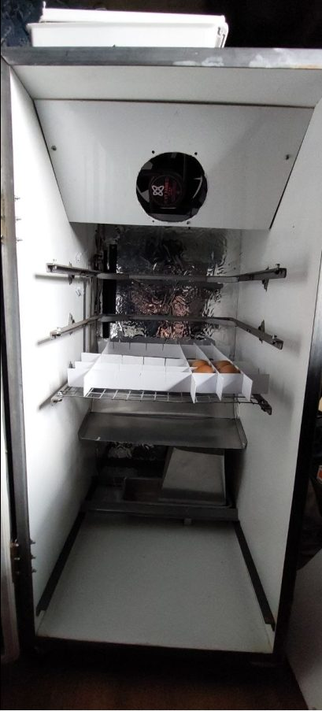
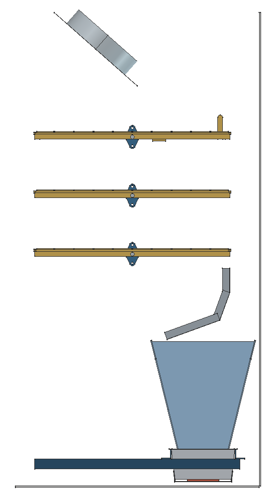
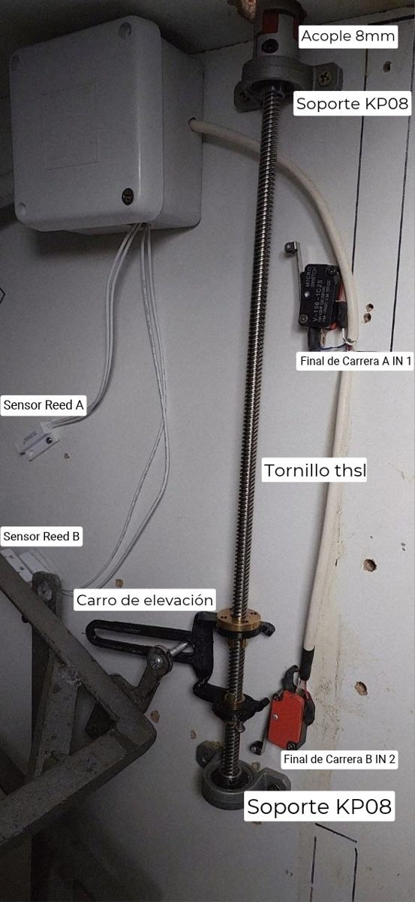
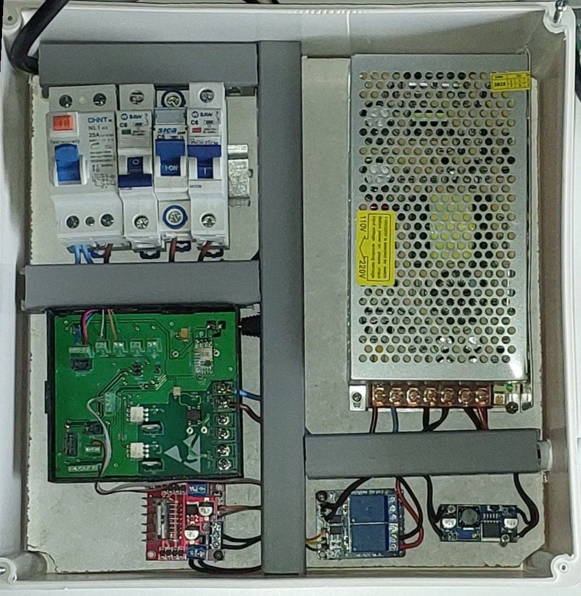

Estas especificaciones corresponden a la LibreIncu 150 v3. Usa componentes disponibles en el mercado y fáciles de reemplazar, y todo su diseño está publicado.
Medidas y capacidad
- Tamaño exterior: unos 100 cm de alto, 50 cm de ancho y 50 cm de profundidad
- Cámara interior: 47 cm de ancho, 50 cm de profundidad y 97 cm de alto
- Capacidad: 166 huevos en tres bandejas de 40 × 40 cm (una de 50 y dos de 58), más una bandeja nacedora en el piso de la cámara
- Mueble: placas de MDF melamina blanco de 18 mm con perfiles de chapa galvanizada, burlete en la puerta y patas de goma

Temperatura y aire
- Resistencia: plana, de 200 W a 220 V, apretada contra el fondo de una bandeja de aluminio en la base de la cámara
- Seguridad: fusible térmico en serie con la resistencia, que corta a 175 °C sin depender del software
- Sensor: BME280, que mide temperatura, humedad y presión
- Temperatura de trabajo: 37,8 °C de fábrica, ajustable desde la app
- Ventilador: turbina de 6" a 220 V con rulemán, en el techo de la cámara
- Deflector: chapa de aluminio debajo de las bandejas que guía el aire
El aire circula por convección forzada: el ventilador lo mueve desde el techo, el deflector lo guía por debajo de las bandejas y la resistencia lo calienta en la base, para que el calor se reparta de forma pareja.

Humedad
- Bomba y electroválvula: de 12 V, montadas encima de la cámara en una caja estanca con desagote
- Aspersor: boquilla de niebla de 6 mm que apunta a una chapa de impacto de aluminio, sobre la bandeja de agua caliente
- Carga de agua: automática, desde la red de agua
- Control: la placa enciende la bomba con un relé según la humedad que mide el sensor
Rotación de las bandejas
- Motor: motorreductor de 12 V y 18 rpm
- Mecanismo: el motor gira un tornillo (husillo) de 8 mm; un carro sube y baja por el tornillo y una varilla une las tres bandejas para que giren juntas
- Recorrido: de unos −24° a +31°
- Sensores de posición: dos sensores magnéticos (reed) marcan la posición de arriba y la de abajo, y el firmware detiene el motor
- Seguridad: dos finales de carrera cortan el giro si falla un sensor
- Rotación: automática y programable

Electrónica y tablero
- Placa: Olivia Control V2, con microcontrolador ESP32 y WiFi
- Resistencia: la placa la maneja con una salida TRIAC
- Motor: puente H BTS7960
- Bomba: módulo de relés de 5 V
- Alimentación: fuente de 220 V a 12 V y reductor de 12 V a 5 V
- Protecciones: disyuntor diferencial y llaves termomagnéticas, en una caja estanca
- Luz: reflector LED interior con su interruptor

En las pruebas realizadas, LibreIncu logró un índice de eclosión del 86 %.
Software
Cada incubadora emite su propia red WiFi, cuyo nombre empieza con "incu-" seguido de un número. Desde el celular te conectás a esa red y la manejás con la app LibrePollo. Si además la conectás a una red WiFi con internet, envía sus datos a un servidor: te llegan los avisos al celular y queda el historial de temperatura y humedad en Grafana.
Firmware de la incubadora
El firmware corre en el microcontrolador y maneja sola la incubadora, manteniendo las condiciones para el desarrollo de los embriones. Usa NodeMCU y está escrito en Lua, un lenguaje sencillo para que las comunidades puedan apropiarse del software. Está en la carpeta /src/embedded del repositorio del proyecto.
Fuente técnica: manual de fabricación y montaje de la LibreIncu 150 v3, de Pablo Monte. Las imágenes de esta página salen de ese manual.